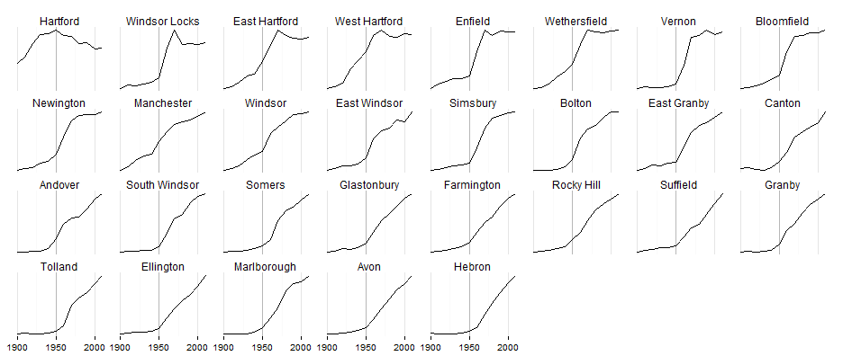

Until 1940, 50% of the region's population lived in the city of Hartford. By 2010, only 16% lived in the city. Population growth for the region has been slow since 1970 (5% between 2000 and 2010), driven by population loss in Hartford and slow growth in urban periphery towns like West Hartford and Windsor.
